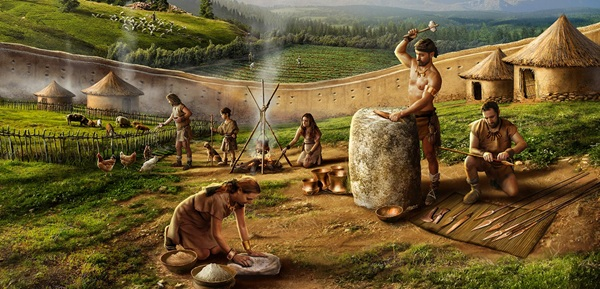
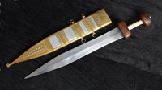
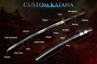

Desde los albores de la humanidad, nuestra supervivencia ha dependido de herramientas cortantes. Inicialmente hechas de sílex y obsidiana tallada, las primeras "armas de filo" eran cuchillos primitivos y hachas de mano. Con el descubrimiento de la metalurgia, la humanidad comenzó a forjar cobre y bronce, lo que permitió crear hojas más largas y duraderas que no se quebraban con facilidad. Ejemplos icónicos de esta era incluyen el Khopesh egipcio y las primeras espadas micénicas, innovaciones que cambiaron para siempre la forma de cazar y el curso de la guerra en la antigüedad.

Diseñada para acompañar al gran escudo (scutum), la Gladius Hispaniensis era una espada corta, ancha y devastadora en distancias cerradas. Su función principal era el apuñalamiento rápido y preciso en la formación cerrada de las temibles legiones romanas.

Famosa por su filo curvo y su proceso de templado diferencial (que creaba el característico patrón "hamon" en la hoja), esta espada se forjaba plegando el acero tamahagane para purificar el metal. Más que una herramienta, era el símbolo de honor del guerrero japonés feudal.
A lo largo de los siglos, el diseño de las espadas y herramientas de filo evolucionó drásticamente para contrarrestar los avances en las armaduras. Desde hojas anchas diseñadas para golpear y romper cota de malla, hasta estoques delgados y rígidos creados específicamente para encontrar las debilidades en una armadura de placas.